| Res | Horse | Price | BSP | Dr | Form | Crse | Suit | OR | Spd | TF | Last comment |
|---|---|---|---|---|---|---|---|---|---|---|---|
| 5 | 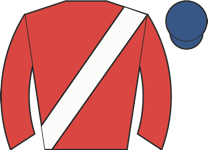 Freshwater | 4.33 | - | 1 | unraced | - | |||||
| 4 | Sara's Silver Girl ◆ 2 | 5.50 | - | 11 | 5 | 92 | Wore hood to post, midfield, asked for effort 2f out, no telling impression. | ||||
| 3 | 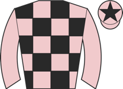 Macau ⚠ ground ▼ cls | 6.00 | - | 9 | 3-7 | trk✓ | 92 | Edged left start, prominent, driven 2f out, not much room and no impression inside final 1 | |||
| 1 | 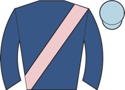 Missouri Waltz | 7.00 | - | 7 | unraced | - | |||||
| 6 | 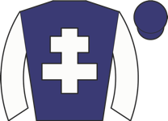 Black Fury ◆ 3 | 8.50 | - | 6 | 4 | 90 | Midfield, ridden over 2f out, plugged on one pace final furlong | ||||
| 9 | 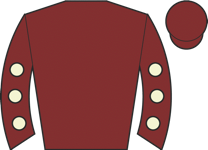 Havana Court ◆ 1 | 11.00 | - | 3 | 8-3 | trk✓ | 89 | Close up, pushed along over 2f out, ridden and outpaced by winner over 1f out, lost second | |||
| 7 | 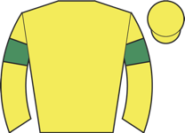 Tradittion | 11.00 | - | 4 | unraced | - | |||||
| 2 | 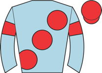 Aljoon ⚠ ground ▼ cls | 13.00 | - | 10 | 10 | 91 | Dwelt, towards rear, pushed along over 2f out, some progress 1f out, never on terms | ||||
| 0 | 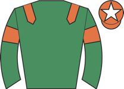 Bayside Way ▲ cls | 21.00 | - | 8 | 9 | 93 | Chased leaders, ridden 2f out, weakened over 1f out | ||||
| 10 | 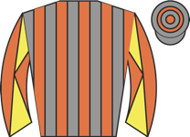 Hey Dougie ⚠ ground | 26.00 | - | 5 | 11 | 88 | Slowly away, always behind | ||||
| 8 | 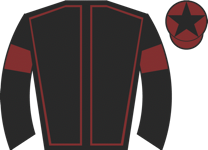 Scarlet Dynasty ⚠ ground ▲ cls | 26.00 | - | 2 | 8 | 84 | Held up in rear, ridden over 2f out, never in contention |
| Res | Horse | Price | BSP | Dr | Form | Crse | Suit | OR | Spd | TF | Last comment |
|---|---|---|---|---|---|---|---|---|---|---|---|
| 0 | Little Lady Karen ◆ 1 ▼ cls | 2.75 | - | 3 | 3-2 | going✓ trip✓ trk✓ | 74 | 91 | Tracked leader, shaken up to lead over 1f out, headed final furlong, soon pressed winner b | ||
| 3 | 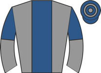 Hamdani Mokhater M2 ▲ cls | 3.50 | - | 1 | 5-7-5-2 | going✓ trip✓ | 60 | 90 | ★★★★★ | In touch with leaders, ridden 3f out, headway to lead 2f out, led narrowly entering final | |
| 1 | 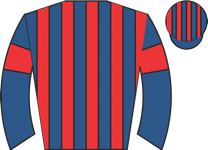 Koodini ◆ 3 | 5.50 | - | 4 | 9-11-2-2-3 | going✓ trk✓ | 69 | 89 | ★★☆☆☆ | In touch with leaders, outpaced soon after halfway, edged right over 1f out, ridden and so | |
| 4 | 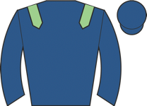 Dakota Brave ◆ 2 ★ EYE ▼ cls | 6.50 | - | 2 | 6-5-3-4 | trk✓ | 66 | 88 | ★★★☆☆ | In touch with leaders, ridden 3f out, chased leaders over 2f out, lost position entering f | |
| 2 | 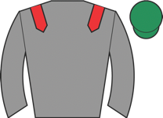 Bigalo ⚠ ground ▼ cls | 8.00 | - | 5 | 6-9-7 | 64 | 91 | ★★★☆☆ | Mid-division, pushed along over 2f out, ridden over 1f out, made no impression |
| Res | Horse | Price | BSP | Dr | Form | Crse | Suit | OR | Spd | TF | Last comment |
|---|---|---|---|---|---|---|---|---|---|---|---|
| 5 | 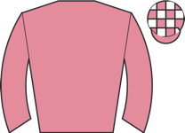 Ideal Guest ◆ 2 | 3.00 | - | 2 | 5-11-3-10-4-1 | 1r 1p | going✓ trk✓ | 59 | 94 | ★★★★☆ | Went early to post, made all, ridden over 1f out, kept on |
| 4 | 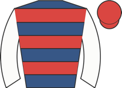 Kings Merchant M2 ★ EYE ▼ cls | 5.00 | - | 7 | 6-4-7-8-2-1 | 1r | going✓ trip✓ trk✓ | 64 ↓ | 91 | ★★★☆☆ | Held up in rear, shaken up and progress 2f out, stayed on strongly final furlong, led fina |
| 3 | 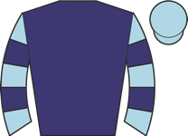 Good Karma ◆ 1 | 6.00 | - | 3 | 3-2-7-4-1-2 | trip✓ trk✓ | 62 | 96 | ★★★★☆ | Soon raced in second, pushed along inside final furlong, chased winner inside final 110yds | |
| 2 | 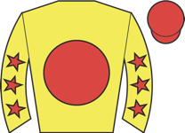 Vince Le Prince ◆ 3 ▼ cls | 7.00 | - | 4 | 2-2-7-5-3-10 | 3r 3p | going✓ trip✓ trk✓ | 64 | 93 | ★★★☆☆ | Tracked leaders, ridden 2f out, soon weakened |
| 6 | 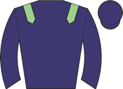 Vega Storm ⚠ ground ▼ cls | 8.00 | - | 6 | 3-3-5-10-4 | 2r | trk✓ | 64 | 94 | ★★★★★ | Midfield, headway over 1f out, kept on, just denied third towards finish |
| 7 | 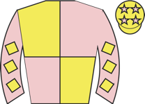 Gressington ⚠ ground | 13.00 | - | 5 | 6-11-8-10-7-4 | 65 ↓ | 92 | ★★★☆☆ | Midfield, pushed along over 2f out, progress over 1f out, stayed on without threatening | ||
| 8 | 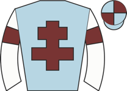 Patontheback ⚠ ground | 13.00 | - | 8 | 6-10-7-6-10-6 | 1r | 55 ↓ | 92 | ★★☆☆☆ | Mid-division, ridden 2f out, no progress | |
| 1 | 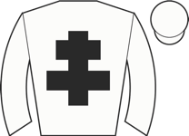 Wise Crack | 21.00 | - | 1 | 3-8-10-5-6-8 | 63 ↓ | 91 | ★★☆☆☆ | Midfield, ridden over 2f out, weakened over 1f out |
| Res | Horse | Price | BSP | Dr | Form | Crse | Suit | OR | Spd | TF | Last comment |
|---|---|---|---|---|---|---|---|---|---|---|---|
| 4 | Riddikulus ◆ 1 ★ EYE | 2.38 | - | 7 | 6-6-4-4-4-1 | going✓ trip✓ trk✓ | 50 ↓ | 83 | ★★★★★ | Prominent, took second 2f out, chased leader inside final furlong, ran on well, all out to | |
| 1 | 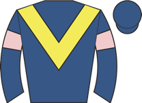 Sound Gloria ◆ 2 M2 | 3.00 | - | 1 | 13-7-7-3 | trk✓ | 52 | 87 | ★★★★☆ | Wore hood to post, in touch, ridden along 3f out, outpaced and making no impression over 1 | |
| 2 | 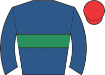 Fairydale | 9.00 | - | 6 | 5-5-6-3-8-4 | trk✓ | 50 ↓ | 78 | ★★★☆☆ | Impeded start, towards rear, headway 3f out, closed on leaders when ridden 2f out, outpace | |
| 7 | 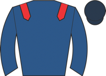 Clova Royale ⚠ ground | 11.00 | - | 3 | 14-8-7-8 | 50 | 86 | ★★☆☆☆ | Held up in mid-division, switched left over 1f out, drifted left and weakened over 1f out | ||
| 5 | 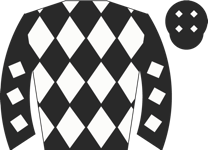 Steel Fixer ◆ 3 ▼ cls | 15.00 | - | 5 | 6-7-4-5---4 | 52 | 68 | ★★★☆☆ | In rear, closed up and pushed along before 2 out, in 2 length third when blundered last, r | ||
| 6 | 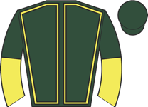 Spirit Of Tokyo ▼ cls | 15.00 | - | 4 | 10-7-8 | 45 | 81 | ★★☆☆☆ | Never better than midfield, outpaced and struggling from 2f out, soon weakened | ||
| 3 | 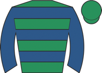 Project Kinsman | 17.00 | - | 2 | 8-8-2-3-8-5 | trk✓ | 46 | 81 | ★★★☆☆ | Edged right start, chased leaders, shaken up over 3f out, ridden over 2f out, faded over 1 |
| Res | Horse | Price | BSP | Dr | Form | Crse | Suit | OR | Spd | TF | Last comment |
|---|---|---|---|---|---|---|---|---|---|---|---|
| 4 | 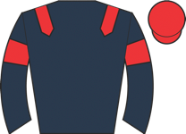 Hibernate ◆ 2 ▲ cls | 2.38 | - | 3 | 7-2-1-1-5-2 | going✓ trip✓ trk✓ | 71 ↑ | 85 | ★★★★☆ | Tracked front pair, pushed along and switched right for headway over 1f out, pressed leade | |
| 3 | 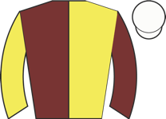 L'Eagle Aid ◆ 3 M2 ▲ cls | 3.25 | - | 4 | 6-5-6-6-3-5 | trk✓ | 75 | 88 | ★★★★★ | Midfield, ridden 2f out, headway over 1f out, short of room final 110yds, no extra | |
| 2 | Something ◆ 1 | 4.00 | - | 2 | 2-8-3-1-2-3 | trip✓ trk✓ | 77 | 96 | ★★★☆☆ | Led, joined after 3f, ridden when headed 2f out, weakened inside final furlong | |
| 1 | 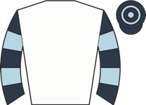 Explode ⚠ ground ▼ cls | 9.00 | - | 1 | 6-11-4-4-2-8 | 1r | 81 | 70 | ★★☆☆☆ | Slowly away in rear, prominent after 1f, disputed lead 3f out, ridden over 2f out, headed |
| Res | Horse | Price | BSP | Dr | Form | Crse | Suit | OR | Spd | TF | Last comment |
|---|---|---|---|---|---|---|---|---|---|---|---|
| 3 | 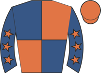 Miss Rainbow ◆ 1 | 3.00 | - | 1 | 3-5-2-1-11-3 | 2r 2p | trip✓ trk✓ | 60 | 95 | ★★★★★ | Close up, ridden to lead over 2f out, headed over 1f out, plugged on inside final furlong |
| 2 | Wait For It M2 | 3.75 | - | 2 | 9-4-8-6-11-3 | trk✓ | 45 ↓ | 85 | ★★★☆☆ | In rear, steady headway from over 2f out, ridden over 1f out, kept on but not pace of lead | |
| 1 | 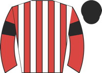 Barmyblade ◆ 2 | 6.00 | - | 6 | 6-12-8-2-1-10 | going✓ trip✓ trk✓ | 54 | 93 | ★★★★☆ | Led, pushed along when pressed over 2f out, ridden over 1f out, headed inside final furlon | |
| 4 | Mister Sky Blue | 7.00 | - | 4 | 9-2-7-2-9-5 | going✓ trip✓ trk✓ | 49 | 91 | ★★★☆☆ | Raced in rear, headway over 2f out, shaken up over 1f out, kept on same pace inside final | |
| 7 | 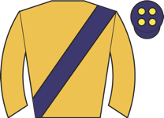 Woodhay Whisper ▼ cls | 9.00 | - | 7 | 8-7-4-9-7-5 | 1r | 58 | 94 | ★★☆☆☆ | Taken down early, slowly away, always in rear | |
| 5 | Highfield Sunshine ⚠ ground | 13.00 | - | 3 | 3-6-5-7-11-10 | 1r | trk✓ | 60 ↓ | 89 | ★★☆☆☆ | Wore hood to post, midfield, ridden and headway when badly hampered 2f out, not recover |
| 6 | Howzak ◆ 3 | 21.00 | - | 5 | 7-9-1-4-8-8 | trip✓ trk✓ | 58 | 88 | ★☆☆☆☆ | Led to start, soon led, ridden when headed 2f out, weakened quickly over 1f out, tailed of |
| Res | Horse | Price | BSP | Dr | Form | Crse | Suit | OR | Spd | TF | Last comment |
|---|---|---|---|---|---|---|---|---|---|---|---|
| 0 | 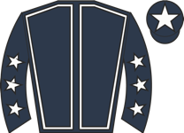 A Little Something ◆ 1 | 2.50 | - | --2-2-1-1-- | going✓ trip✓ trk✓ | 105 ↑ | 79 | ★★★★★ | Prominent, led after 8th, three lengths clear 2 out, pushed along and reduced advantage ap | ||
| 1 | 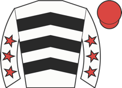 Holy Legend ◆ 2 M2 | 3.25 | - | 7---5-6-1-2 | 1r 1p | going✓ trip✓ trk✓ | 88 | 72 | ★★★★☆ | Tracked leaders, awkward 4th, moved into second 4 out, pushed along and every chance 2 out | |
| 2 | 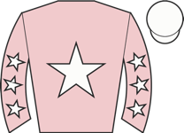 Traveling Soldier | 8.00 | - | 1-2-3-----3 | 2r 2p | trk✓ | 86 | 56 | ★★★☆☆ | Disputed early lead, clearly led after 2nd, mistake 3 out, headed before 2 out, not fluent | |
| 0 | 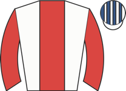 Doyouknowwhatimean ◆ 3 ▼ easy trk ▼ cls | 11.00 | - | 4-----3-6-4 | 2r | trk✓ | 105 ↓ | 52 | ★★★☆☆ | Tracked leaders, pushed along before 4 out, dropped away 3 out, mistake 2 out | |
| 3 | 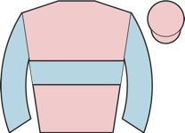 Greer Hill ▼ cls | 11.00 | - | 6-----8-1-5 | 3r 1W | going✓ trk✓ | 90 | 65 | ★★★★☆ | Badly hampered start, detached in rear, jumped right at times, slow 1st, mistake 4th, tail | |
| 4 | 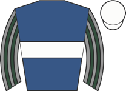 Crackerjack Queen | 13.00 | - | 11-6-3-5-2-4 | 1r | trip✓ trk✓ | 82 ↓ | 52 | ★★☆☆☆ | Midfield, headway to close on leaders soon after halfway, pushed along before 3 out, chase | |
| 0 | 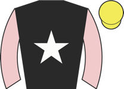 King Of The Story | 26.00 | - | ----4-2---7 | 1r | going✓ trip✓ trk✓ | 83 ↓ | 63 | ★★☆☆☆ | Always towards rear, pushed along before 4 out, tailed off from 3 out | |
| 0 | 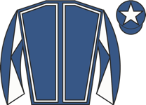 Boskill Borden ⚠ ground | 26.00 | - | 7-2-3-6-9-7 | 3r 2p | trip✓ trk✓ | 79 | 58 | ★☆☆☆☆ | Always in rear, never a factor, tailed off |
| Res | Horse | Price | BSP | Dr | Form | Crse | Suit | OR | Spd | TF | Last comment |
|---|---|---|---|---|---|---|---|---|---|---|---|
| 3 | 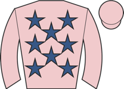 Regal Renaissance ◆ 1 ★ EYE ▼ easy trk ▼ cls | 3.75 | - | --4-2-1-1-1 | going✓ trk✓ | 120 ↑ | 65 | ★★★★★ | Tracked leaders on inner, short of room before 3 out, took second 2 out, soon led and ridd | ||
| 2 | 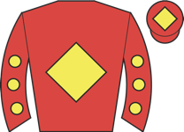 Axel Bleue M2 | 4.50 | - | 2---9-3-3-1 | 3r 1W | going✓ trip✓ trk✓ | 105 ↓ | 44 | ★★★★☆ | In touch with leaders, headway 7th pushed along and slight mistake 4 out, went left last, | |
| 7 | 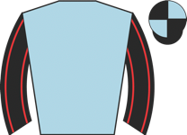 Gwash | 5.50 | - | 8-7-6-5-3-2 | 2r 2p | going✓ trip✓ trk✓ | 110 ↓ | 50 | ★★★★☆ | Held up in rear, headway 12th, every chance after last, kept on but no extra towards finis | |
| 9 | 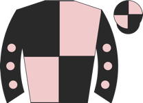 Grillon De Monty | 8.00 | - | 1-4-14-2---2 | 3r 1W | going✓ trip✓ trk✓ | 102 ↑ | 48 | ★★★☆☆ | Hit 1st, chased leaders, in rear after 4th, closed up into third 6th, outpaced and lost po | |
| 5 | 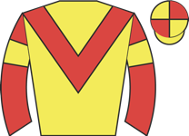 Court In A Storm ◆ 3 ▼ cls | 9.00 | - | --7-4-3-2-4 | 1r 1p | going✓ trip✓ trk✓ | 118 | 63 | ★★★☆☆ | Led narrowly, not fluent 11th, strongly ridden before 3 out, headed before 2 out, weakened | |
| 4 | 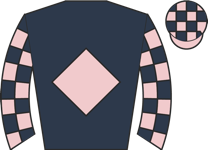 Harrys Hope | 11.00 | - | 1-2-2-2-11-2 | 1r 1p | going✓ trip✓ trk✓ | 112 ↑ | 63 | ★★★☆☆ | Raced in last, went third after 5th, not fluent and dropped to last 11th, regained third 2 | |
| 6 | 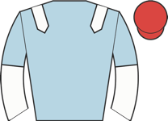 Tiger Orchid | 13.00 | - | 2-2-2-3-1-5 | going✓ trip✓ trk✓ | 119 ↑ | 57 | ★★☆☆☆ | Midfield, went third 13th, lost third 3 out, soon pushed along, no impression after last | ||
| 1 | 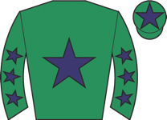 Mt Fugi Park ◆ 2 ▼ easy trk | 17.00 | - | 4---6---1-- | 1r | going✓ trk✓ | 122 | 56 | ★★☆☆☆ | Led, headed and lost ground after mistake 9th, outpaced and mistake 12th, tailed off when | |
| 8 | Jaramillo ▼ cls | 21.00 | - | 2-1-3-6-5-6 | going✓ trk✓ | 117 | 77 | ★★☆☆☆ | Not always fluent, always in rear, detached with a circuit to go, tailed off before 3 out |
| Res | Horse | Price | BSP | Dr | Form | Crse | Suit | OR | Spd | TF | Last comment |
|---|---|---|---|---|---|---|---|---|---|---|---|
| 2 | Iwanttobreakfree ◆ 1 ▲ cls | 3.25 | - | 3 | trk✓ | 64 | Led, headed over 2f out, outpaced over 1f out, plugged on inside final furlong | ||||
| 1 | Provision ◆ 2 | 4.33 | - | 3-5-8-3-3-3 | 1r 1p | trk✓ | 100 | 76 | ★★★★☆ | Soon raced in close second, pushed along 3 out, not fluent last, ridden to briefly dispute | |
| 3 | Faithful Guardian ◆ 3 | 7.00 | - | 2-8-3-6 | 2r 1p | going✓ trip✓ trk✓ | 68 | ★★★☆☆ | Never better than midfield, lost touch before 3 out | ||
| 7 | Arcon | 9.00 | - | 5-1-8-6-6-6 | 1r | going✓ trk✓ | 62 | ★★★☆☆ | Always behind | ||
| 0 | Not Now ⚠ ground ▼ cls | 9.00 | - | 3-13-3 | trk✓ | 53 | ★★☆☆☆ | Raced in last, slow 2nd, hampered 4th, ridden and lost touch before 2 out, tailed off | |||
| 6 | Military Saint | 13.00 | - | - | 60 | Chased leaders, mid-division after 3rd, went third after 5th, slow next and pushed along l | |||||
| 4 | Devon Red | 13.00 | - | unraced | - | ||||||
| 8 | Trackman | 15.00 | - | 7-7-6-5-6-5 | 1r | 66 | ★★★☆☆ | In touch with leaders, outpaced after 2 out, weakened after bad mistake last | |||
| 5 | Delgany Second Now ⚠ ground | 21.00 | - | 5-7-7 | 2r | 46 | ★★☆☆☆ | Towards rear, outpaced before 3 out, lost touch before 2 out | |||
| 9 | Galeforcechopper ⚠ ground | 26.00 | - | 3-9-6 | 1r | trk✓ | 52 | ★☆☆☆☆ | Towards rear, outpaced before 3 out, soon lost touch |
| Res | Horse | Price | BSP | Dr | Form | Crse | Suit | OR | Spd | TF | Last comment |
|---|---|---|---|---|---|---|---|---|---|---|---|
| 2 | Penzance ◆ 2 | 2.75 | - | 11-2-7-4-2-2 | trip✓ trk✓ | 105 ↑ | 78 | ★★★★★ | Soon led, went three lengths clear after 2nd, went further clear before 3 out, reduced lea | ||
| 1 | Without Burlington ◆ 1 ★ EYE ▲ cls | 4.33 | - | 8-3-7-4-1-1 | going✓ | 94 | ★★★★☆ | Front rank, shaken up to challenge over 2f out, ridden to lead narrowly over 1f out, edged | |||
| 3 | Earnest Belief ▼ easy trk | 5.00 | - | 8-4-3-4-3-3 | 1r 1p | trk✓ | 102 ↑ | 55 | ★★★☆☆ | Soon raced in third, disputed lead 3 out, led 2 out, wandered before last, hung right and | |
| 7 | Starshine Legend | 6.50 | - | 2-2-7-6-3-5 | trk✓ | 57 | ★★★☆☆ | Prominent, ridden after 3 out, lost position before 2 out, soon weakened | |||
| 4 | Bound For Glory | 7.00 | - | 4-4-1-3 | trip✓ trk✓ | 65 | ★★★☆☆ | Midfield, headway into second before 3 out where mistake and lost second, asked for effort | |||
| 5 | Happy Chandler ◆ 3 ▼ easy trk ▲ cls | 17.00 | - | 4-2-1-2-2-10 | trk✓ | 89 | ★★☆☆☆ | Early to post, led, ridden and headed over 2f out, soon beaten, weakened inside final furl | |||
| 8 | Lucky Diamond | 51.00 | - | 5-3---6 | 3r 1p | trk✓ | 51 | ★★☆☆☆ | Rear mid-division, pushed along 3 out, no response | ||
| 9 | Delgany Headline | 51.00 | - | 8 | 45 | In rear, tailed off 3 out | |||||
| 6 | Majestic Leo ▲ cls | 101.00 | - | 6-11-8-9-11-8 | 78 | ★☆☆☆☆ | Prominent, ridden along 3f out, weakened quickly over 2f out, tailed off |
| Res | Horse | Price | BSP | Dr | Form | Crse | Suit | OR | Spd | TF | Last comment |
|---|---|---|---|---|---|---|---|---|---|---|---|
| 2 | Playful Fox | 4.00 | - | 4-5---2-4-1 | 2r 1p | going✓ trip✓ trk✓ | 102 | 64 | ★★★★☆ | Held up in rear, went fourth 5th, in touch with leaders 2 out, pushed along and headway to | |
| 7 | Ez Tiger ◆ 1 M2 | 4.33 | - | 1-4-7-2-1-2 | 2r 1W | going✓ trip✓ trk✓ | 102 ↑ | 70 | ★★★★☆ | Soon raced in second, briefly led before 3 out, soon headed, mistake 2 out, chased winner | |
| 3 | Media Mogul ◆ 2 ★ EYE | 5.00 | - | 11-2-4-4-4-1 | 1r 1W | going✓ trip✓ trk✓ | 105 ↑ | 74 | ★★★★★ | In touch with leaders, mistake 3 out, rallied and close on leaders after 2 out, led soon a | |
| 5 | Kernie D'airy ★ EYE | 6.00 | - | 10-2-6-1 | 1r 1W | trip✓ trk✓ | 103 | 56 | ★★★☆☆ | Made all, faced challenge before last, ridden run-in and hung left, stayed on well and alw | |
| 6 | T Or Coffey ⚠ ground ▲ cls | 7.00 | - | 9-3-1-2-5-6 | trip✓ trk✓ | 107 ↓ | 74 | ★★★☆☆ | Slowly into stride, towards rear, headway over 4f out, ridden over 2f out, weakened 1f out | ||
| 4 | Break Point ◆ 3 ▼ easy trk ⚠ ground ▲ cls | 13.00 | - | 6-5-10-3-1-4 | trip✓ trk✓ | 107 ↓ | 75 | ★★★☆☆ | In touch with leaders, outpaced by leading pair 2f out, weakened quickly inside final furl | ||
| 1 | Tilehurst ▼ easy trk | 13.00 | - | 2-3-3-2-4-5 | 2r 2p | trip✓ trk✓ | 103 | 58 | ★★☆☆☆ | Tracked leaders, lost ground before 4 out, towards rear when weakened 2 out |
| Res | Horse | Price | BSP | Dr | Form | Crse | Suit | OR | Spd | TF | Last comment |
|---|---|---|---|---|---|---|---|---|---|---|---|
| 2 | Little Ledgend ◆ 2 ▼ easy trk | 4.33 | - | 5-4-2-2-3-2 | going✓ trip✓ trk✓ | 102 | 64 | ★★★★★ | In rear, not fluent 6th and pushed along, ridden before omitted 2 out, ran on before omitt | ||
| 0 | Blue Universe M2 | 5.50 | - | 2-3-5-8-2-- | 1r 1p | going✓ trip✓ trk✓ | 102 | 63 | ★★★☆☆ | Midfield, dropped to rear after 4th, pushed along and headway after 3 out, went second whe | |
| 1 | The Grayster ◆ 3 ▼ easy trk ▼ cls | 6.00 | - | 2-5-- | trk✓ | 100 | 58 | ★★★☆☆ | Midfield, dropped to rear and hung badly left when struggling after 4 out, lost touch befo | ||
| 10 | Quick Of The Night | 8.50 | - | 4-3-6-5-3-3 | 2r 1p | trk✓ | 84 ↓ | 66 | ★★★☆☆ | In rear trio, improved 4 out and soon pushed along, ridden after 3 out, took third 2 out, | |
| 5 | Midnight Jewel ◆ 1 ⚠ ground ▼ cls | 11.00 | - | 7-7-3-1---- | 1r | trip✓ trk✓ | 96 | 83 | ★★★☆☆ | Led but pestered, headed 4th, close up, hit 8th and lost position, in rear after 11th and | |
| 7 | Estacas ▼ easy trk | 11.00 | - | 6-8-8-8-2-3 | 1r 1p | going✓ trip✓ trk✓ | 97 ↓ | 72 | ★★★☆☆ | Led, pushed along before omitted 2 out, went clear with winner and headed before omitted l | |
| 9 | Roadshow ▼ cls | 13.00 | - | --3-4-1-7-6 | going✓ trk✓ | 103 | 69 | ★★★☆☆ | Midfield, not fluent 5th, ridden in rear when mistake 3 out, brief headway before 2 out, w | ||
| 8 | Bashful Boy | 13.00 | - | 7-5-4-4-4-3 | 1r 1p | trk✓ | 94 ↑ | 73 | ★★★★☆ | Close up, led before 6th, headed after 3 out and ridden, not fluent 2 out and weakened, mi | |
| 3 | Gone In Sixty | 15.00 | - | 2-6-4---2-4 | trip✓ trk✓ | 83 | 69 | ★★★☆☆ | Led narrowly, pushed along and headed approaching last, ridden and weakened run-in | ||
| 0 | Pivotal Days ▲ cls | 21.00 | - | 7-4-9-6-13-7 | 1r | 92 | 66 | ★★☆☆☆ | Slowly into stride, always in rear, | ||
| 6 | Medina Blue ⚠ ground ▼ cls | 21.00 | - | --6-7-7 | 1r | 85 | 49 | ★★★★☆ | Always towards rear, never involved | ||
| 0 | Achille Des Rocs | 26.00 | - | 1-1-5-5---- | going✓ trk✓ | 101 ↓ | 58 | ★★☆☆☆ | Led, headed 8th, lost position after 3 out, weakened quickly and pulled up before 2 out | ||
| 4 | The Padster | 26.00 | - | 7---4-11-4-2 | trip✓ trk✓ | 86 | 59 | ★★★☆☆ | Prominent, dropped to midfield before 4th, pushed along before 7th, headway into second be |
| Res | Horse | Price | BSP | Dr | Form | Crse | Suit | OR | Spd | TF | Last comment |
|---|---|---|---|---|---|---|---|---|---|---|---|
| 9 | Back To Cali ⚠ IRE form | 3.75 | - | 4-3-5-4-3-2 | trk✓ | 100 | 64 | ★★★★★ | Took keen hold, held up in midfield, not fluent 5th, headway before 3 out, not fluent 2 ou | ||
| 0 | Catuaba ◆ 1 M2 ▼ cls | 6.00 | - | --2-1-7-2-2 | 4r 2p | going✓ trip✓ trk✓ | 99 ↑ | 82 | ★★★☆☆ | Tracked leaders, took 2nd after 4 out, went clear with winner after 3 out, ridden before 2 | |
| 1 | Mancero ◆ 3 M2 | 6.00 | - | 4-2-4-1---2 | 2r 1W | going✓ trk✓ | 91 ↑ | 71 | ★★★★☆ | Tracked leaders, moved into second 4 out, pushed along before 3 out, kept on but always he | |
| 5 | Roxboro River ◆ 2 ▼ easy trk | 8.00 | - | 7-4-7-2-2-6 | 1r 1p | going✓ trip✓ trk✓ | 100 | 66 | ★★★☆☆ | Towards rear, closed 4 out, pushed along disputing fourth final fence, soon ridden run-in, | |
| 8 | Alderley Charlie | 8.00 | - | --------10-2 | 70 | 56 | ★★★☆☆ | Mid-division, raced keenly, headway to chase leader before 4 out, led before 3 out, headed | |||
| 6 | Lunar Morning ▼ easy trk | 13.00 | - | --5-3-5 | trk✓ | 98 | 54 | ★★★☆☆ | Prominent, pushed along before 2 out, no extra approaching last | ||
| 7 | Spitalfield | 13.00 | - | 6-8-8-3-4-6 | 1r | trk✓ | 95 ↓ | 62 | ★★★☆☆ | Mid-division, dropped to rear after 4 out, pushed along 3 out, no real progress | |
| 4 | Indian Sunbird | 13.00 | - | 6-1-5-3-2-6 | trk✓ | 95 ↑ | 54 | ★★★★☆ | In rear, pushed along 3 out and struggling, ran on past beaten rivals from 2 out, not flue | ||
| 3 | Barry Fife | 15.00 | - | 5-2-7-3-5-- | 1r | trip✓ trk✓ | 99 | 61 | ★★☆☆☆ | Towards rear, raced alone far side on first circuit, dropped to last and struggling 8th, s | |
| 2 | Citizen Jane | 21.00 | - | 11-7-9-8-2-4 | trk✓ | 69 ↓ | 64 | ★★☆☆☆ | Unseated rider in preliminaries and wore hood when ran free to post, prominent, led 5th, h | ||
| 0 | Swingforthefence | 34.00 | - | 3-7-9-7-6-8 | trk✓ | 90 | 50 | ★★☆☆☆ | Held up in rear, not fluent 2nd, bad mistake 5th, struggling 7th, soon no chance | ||
| 0 | Luminaries ⚠ ground | 34.00 | - | 3---9-9-10-7 | trk✓ | 79 ↓ | 62 | ★★★☆☆ | Mid-division, pushed along after 2 out and dropped away |
| Res | Horse | Price | BSP | Dr | Form | Crse | Suit | OR | Spd | TF | Last comment |
|---|---|---|---|---|---|---|---|---|---|---|---|
| 0 | Star Velocity ◆ 1 ★ EYE ▼ easy trk | 1.67 | - | 2 | 3-1 | going✓ trip✓ trk✓ | 73 | 96 | Handy, pushed along over 2f out and soon pressed leader, ridden 1f out, stayed on well to | ||
| 0 | Court Alert ◆ 2 ▼ easy trk | 2.38 | - | 1 | 5-2-26-8-4-3 | 1r | going✓ trk✓ | 70 ↓ | 90 | ★★★☆☆ | Edged left start, tracked leaders, shaken up over 2f out, ridden and headway over 1f out, |
| 0 | El Ghuwah ◆ 3 | 21.00 | - | 3 | 5 | 88 | Towards rear, pushed along over 2f out, soon ridden, made no impression | ||||
| 0 | Red Legs ⚠ ground | 67.00 | - | 4 | 8-7 | 86 | Held up in touch, ridden over 1f out, soon beaten |
| Res | Horse | Price | BSP | Dr | Form | Crse | Suit | OR | Spd | TF | Last comment |
|---|---|---|---|---|---|---|---|---|---|---|---|
| 0 | Buckland Belle ◆ 2 | 2.10 | - | 6 | 5-5-1-3-2-2 | going✓ trip✓ trk✓ | 54 | 91 | ★★★★★ | Tracked leaders, pushed along and went close second over 3f out, led 2f out and soon ridde | |
| 0 | Lope Y Linda ◆ 1 M2 ▼ easy trk | 4.00 | - | 2 | 1-2-10-1-2-4 | 1r | trip✓ trk✓ | 55 ↑ | 92 | ★★★★☆ | Took keen hold, midfield, ridden and briefly pressed leader over 2f out, weakened inside f |
| 0 | Able Astra ◆ 3 ▼ cls | 5.00 | - | 1 | 8-4-9 | 1r | 55 | 91 | ★★★☆☆ | Slowly away, took keen hold, held up in midfield, ridden over 2f out, no impression over 1 | |
| 0 | Ivat Ghia ▼ cls | 11.00 | - | 5 | 8-6-6 | 52 | 90 | ★★★☆☆ | Towards rear, never seriously involved | ||
| 0 | Sporty Socks ▼ easy trk | 17.00 | - | 4 | 2-6-5-3-7-6 | 1r | trip✓ trk✓ | 45 ↓ | 88 | ★★☆☆☆ | Led, headed halfway and pushed along, dropped away 2f out |
| 0 | Dora Vita ⚠ ground | 21.00 | - | 3 | 4-4-11-6-13-5 | 46 ↓ | 86 | ★★☆☆☆ | Held up in rear, outpaced over 1f out, weakened inside final furlong |
| Res | Horse | Price | BSP | Dr | Form | Crse | Suit | OR | Spd | TF | Last comment |
|---|---|---|---|---|---|---|---|---|---|---|---|
| 0 | Liveinthelight ◆ 1 ★ EYE ▼ easy trk | 1.91 | - | 3 | 11-5-9-1-2-1 | going✓ trip✓ trk✓ | 68 | 83 | ★★★★☆ | Chased leader, pushed along well over 1f out and edged left, ridden and led under 1f out, | |
| 0 | Caraway ◆ 3 M2 ▼ easy trk ⚠ ground ▲ cls | 3.50 | - | 2 | 7-6-4-6-1-3 | trip✓ trk✓ | 63 ↑ | 89 | ★★★★★ | Wore earplugs to start, towards rear, headway over 3f out, took second over 2f out, chased | |
| 0 | Musical Accord ◆ 2 ▼ cls | 5.00 | - | 1 | 7-6-6 | 70 | 87 | ★★☆☆☆ | Dwelt start, towards rear, pushed along and headway 3f out, ridden over 1f out, modest lat | ||
| 0 | Semper Femina ▼ easy trk ⚠ ground | 13.00 | - | 4 | 2-9-7-2-7 | trk✓ | 68 | 82 | ★★★☆☆ | Towards rear, ridden 3f out, weakened 2f out |
| Res | Horse | Price | BSP | Dr | Form | Crse | Suit | OR | Spd | TF | Last comment |
|---|---|---|---|---|---|---|---|---|---|---|---|
| 0 | Typeface | 3.25 | - | 6 | 2-2-7-6-4-3 | trk✓ | 51 | 90 | ★★★★☆ | Wore red hood to post, mid-division, improved over 2f out, ridden in third over 1f out, st | |
| 0 | Kameel ◆ 2 M2 | 4.00 | - | 1 | 3-9-5-2-4-4 | 2r | going✓ trip✓ trk✓ | 55 ↓ | 91 | ★★★★★ | Mid-division, pushed along 3f out, ran on over 1f out, took fourth towards finish, never n |
| 0 | Hachiman ◆ 3 | 4.50 | - | 3 | 9-8-3-9-14-3 | 1r 1p | trk✓ | 54 ↓ | 91 | ★★★★☆ | Dwelt, in rear, pushed along and improved 3f out, ridden in fourth over 1f out, stayed on, |
| 0 | Ricardo Phillips ◆ 1 ★ EYE | 7.00 | - | 5 | 5-2-1-9-3-3 | 3r 1W | going✓ trk✓ | 55 | 80 | ★★★☆☆ | Towards rear, headway towards centre from 2f out, chased leaders inside final furlong, ran |
| 0 | Clipsham Noble | 7.00 | - | 4 | 6-5-4-1-4-6 | 3r 1W | going✓ trk✓ | 49 ↑ | 86 | ★★☆☆☆ | Held up in rear, asked for effort over 2f out, passed beaten rivals 1f out, no telling imp |
| 0 | Turton | 17.00 | - | 2 | 8-6-9-5 | 51 | 85 | ★★☆☆☆ | Held up in touch, ridden over 3f out, no impression |
| Res | Horse | Price | BSP | Dr | Form | Crse | Suit | OR | Spd | TF | Last comment |
|---|---|---|---|---|---|---|---|---|---|---|---|
| 0 | Zen Diva ◆ 2 ▼ easy trk ▲ cls | 2.50 | - | 2 | 4-2-3-1-1 | going✓ trip✓ trk✓ | 81 | 93 | ★★★★★ | Made all, pushed along 2f out and kept on, ridden 1f out and cleared away, comfortably | |
| 0 | Miss Nightcap ◆ 1 M2 ★ EYE ▼ easy trk ▲ cls | 4.00 | - | 4 | 2-2-1 | going✓ trip✓ trk✓ | 79 | 94 | ★★★★☆ | Wore hood to start, made all, set strong pace, asserted over 1f out, ran on well, readily | |
| 0 | Afraj ▼ easy trk | 6.00 | - | 1 | 1-3-3 | trk✓ | 77 | 88 | ★★★☆☆ | Wore hood to post, edged right start, in touch with leaders, pushed along over 2f out, rid | |
| 0 | Amelia's Joy ★ EYE ▼ easy trk ▲ cls | 7.00 | - | 6 | 7-1-4-5-2-1 | 1r 1W | going✓ trip✓ trk✓ | 68 | 95 | ★★★☆☆ | Went to post early wearing red hood, tracked leaders, pushed along well over 1f out, led o |
| 0 | Cotai Belle ◆ 3 ▼ easy trk | 7.50 | - | 3 | 21-9-8-2-2-2 | going✓ trip✓ trk✓ | 80 | 96 | ★★★☆☆ | Front rank, pushed along over 2f out, soon ridden, went second inside final furlong, kept | |
| 0 | Romantic Twilight ⚠ ground | 34.00 | - | 5 | 5-10-1-6-13-9 | trip✓ trk✓ | 73 | 91 | ★★☆☆☆ | Wore red hood to post, mid-division far side, outpaced well over 2f out, soon behind |
| Res | Horse | Price | BSP | Dr | Form | Crse | Suit | OR | Spd | TF | Last comment |
|---|---|---|---|---|---|---|---|---|---|---|---|
| 0 | The Tunguska Event ◆ 1 ▼ cls | 3.75 | - | 5 | 4-1-2-1-3-6 | trip✓ trk✓ | 64 ↑ | 98 | ★★★★★ | Raced alone far side, led, ridden and headed over 1f out, lost second and no extra final f | |
| 0 | Pimentel M2 | 4.33 | - | 6 | 5-1-2-6-2-3 | going✓ trip✓ trk✓ | 57 ↑ | 89 | ★★★★☆ | Midfield, pushed along into third over 1f out, went second and chased winner entering fina | |
| 0 | Maximum Velocity ◆ 2 | 5.00 | - | 3 | 9-2-10-1-9-3 | 1r 1p | going✓ trk✓ | 62 ↑ | 90 | ★★★☆☆ | Took keen hold, prominent, steadied over 3f out, ridden over 2f out, effort over 1f out, n |
| 0 | Apex Star ▼ easy trk ⚠ ground | 8.00 | - | 4 | 5-3-3-7-2-11 | trip✓ trk✓ | 57 | 90 | ★★★☆☆ | Wore hood to post, prominent, ridden 3f out, lost position 2f out, soon weakened | |
| 0 | Portacloy ◆ 3 ▼ cls | 9.00 | - | 7 | 4-3-1-11-8-6 | trip✓ trk✓ | 65 | 90 | ★★☆☆☆ | Wore red hood to post, shifted left start, raced keenly chasing leaders, pushed along 2f o | |
| 0 | Landslide ▼ cls | 11.00 | - | 2 | 10-5-8 | 1r | 59 | 90 | ★★☆☆☆ | Wore hood to post, went left start, raced keenly, towards rear outer, pushed along 3f out, | |
| 0 | Crafty Blue ⚠ ground ▼ cls | 13.00 | - | 8 | 7-1-9-9-9 | trk✓ | 65 | 82 | ★★☆☆☆ | In rear, pushed along over 3f out, lost touch 2f out | |
| 0 | Goldenstateofmind ▼ cls | 15.00 | - | 1 | 2-6-7-7-8 | going✓ trk✓ | 63 | 90 | ★★☆☆☆ | Slowly away, always behind |
| Res | Horse | Price | BSP | Dr | Form | Crse | Suit | OR | Spd | TF | Last comment |
|---|---|---|---|---|---|---|---|---|---|---|---|
| 3 | Emma's Letter ◆ 1 ★ EYE ▼ easy trk | 2.88 | - | 1 | 2-2-4-3-9-1 | going✓ trip✓ trk✓ | 68 | 84 | ★★★★☆ | Soon raced in second, travelled well when pressed leader 2f out, led over 1f out, ridden i | |
| 2 | What's The Plan ◆ 2 M2 ▼ easy trk | 3.25 | - | 3 | 1-20-4-4-3-4 | 1r 1W | trk✓ | 74 | 91 | ★★★★★ | Held up towards rear, making heady when denied clear run and bumped both sides over 1f out |
| 4 | Don Pablo Colina ▲ cls | 4.00 | - | 2 | 5-6-8-3 | 2r | trk✓ | 62 | 85 | ★★★★☆ | Prominent, ridden over 2f out, pressed leader over 1f out, led inside final furlong, heade |
| 1 | Almekarem ◆ 3 ▼ easy trk ▼ cls | 5.50 | - | 4 | 1-12-9-3-6-4 | trk✓ | 74 ↓ | 88 | ★★★☆☆ | Held up in rear, pushed along over 2f out, ridden and kept on from over 1f out, never near |
| Res | Horse | Price | BSP | Dr | Form | Crse | Suit | OR | Spd | TF | Last comment |
|---|---|---|---|---|---|---|---|---|---|---|---|
| 0 | Lucky Sevens ◆ 3 ▼ cls | 2.38 | - | 1 | 3-2-5-1-2-1 | 1r | going✓ trip✓ trk✓ | 57 | 70 | ★★★★☆ | Raced in third, took second 4th, closed on leader after 2 out, led soon after last, idled |
| 0 | The Craftymaster ◆ 2 M2 ▼ easy trk | 3.25 | - | 3 | 6-3-6-5-1-2 | trip✓ trk✓ | 53 ↑ | 83 | ★★★☆☆ | Prominent, ridden over 2f out, kept on and went second inside final 110yds, always held to | |
| 0 | Tiny Riot ◆ 1 ★ EYE ▼ cls | 6.00 | - | 2 | 6-7-5-1-2-2 | going✓ trip✓ | 60 | 71 | ★★★★★ | Led, set strong pace, wandered before 4th, stumbled on land last, headed run-in, rallied a | |
| 0 | Lilykoy | 13.00 | - | 4 | 12-7-11-5-6-8 | 1r | 45 ↑ | 81 | ★★☆☆☆ | Towards rear, ridden and headway over 2f out, no further impression | |
| 0 | Cherry Cola ⚠ ground | 15.00 | - | 5 | 2-4-3-6-5-8 | 2r 1p | trip✓ trk✓ | 50 | 77 | ★★★☆☆ | Never better than midfield |
| 0 | Fram Castle | 17.00 | - | 7 | 5-2-7-6-12-8 | 2r 1p | going✓ trk✓ | 50 ↓ | 80 | ★★☆☆☆ | Slowly away, always towards rear, tailed off from over 1f out |
| 0 | Marinakis | 21.00 | - | 6 | 3-4-6-8-8-4 | 1r | trk✓ | 45 | 82 | ★★☆☆☆ | Midfield, soon made headway to race in second, pushed along 3f out, outpaced over 2f out, |
| Res | Horse | Price | BSP | Dr | Form | Crse | Suit | OR | Spd | TF | Last comment |
|---|---|---|---|---|---|---|---|---|---|---|---|
| 0 | Romidijo ◆ 3 | 3.50 | - | 1 | 8-3-10-4-2 | going✓ trk✓ | 64 | 89 | ★★★★☆ | Prominent, ridden and chased winner 2f out, kept on same pace inside final furlong, just h | |
| 0 | Miss Moneypit ▼ cls | 4.00 | - | 2 | 8-4-5-5 | 61 | 90 | ★★★★★ | In touch on outside of group, outpaced over 1f out, soon weakened | ||
| 0 | Dreamlover ◆ 1 ▼ cls | 5.00 | - | 3 | 4-3-5 | trk✓ | 65 | 91 | ★★★★☆ | Wore red hood to post, led, ridden and headed over 1f out, raced awkwardly and weakened | |
| 0 | Invicta Rose ▼ cls | 7.00 | - | 8 | 4-7-6-5 | 58 | 89 | ★★★☆☆ | Held up in rear, switched left and headway over 1f out, never threatened leaders | ||
| 0 | Sable Island ◆ 2 ▼ easy trk ▼ cls | 13.00 | - | 5 | 3-3-7-6 | trk✓ | 65 | 92 | ★★★☆☆ | Took keen hold, prominent, ridden 2f out, weakened inside final furlong | |
| 0 | C'est Lui ⚠ ground ▼ cls | 13.00 | - | 6 | 6-7-4 | 58 | 87 | ★★★☆☆ | Close up, ridden and weakened over 1f out | ||
| 0 | Dee's Star ▼ cls | 15.00 | - | 4 | 6-5-7 | 57 | 91 | ★★★☆☆ | Wore hood to post, chased leaders on outer, ridden along over 2f out, weakened over 1f out | ||
| 0 | Targa ⚠ ground | 15.00 | - | 7 | 8-7-4-5 | 1r | 56 | 89 | ★★★☆☆ | Wore hood to post, took keen hold, in touch with leaders, ridden over 2f out, no impressio |
| Res | Horse | Price | BSP | Dr | Form | Crse | Suit | OR | Spd | TF | Last comment |
|---|---|---|---|---|---|---|---|---|---|---|---|
| 0 | Asuka ◆ 1 ★ EYE ▼ easy trk | 1.02 | - | 2 | 1-2 | going✓ trip✓ trk✓ | 89 | 96 | Prominent, ridden over 2f out, chased leader entering final furlong, soon switched right, | ||
| 0 | Yazoo ◆ 2 | 17.00 | - | 1 | 8-- | 90 | Went right start and unseated rider | ||||
| 0 | Coilltedudeisback ◆ 3 ▲ cls | 34.00 | - | 3 | 10 | 88 | Slowly into stride, lost many lengths start, in rear throughout |
| Res | Horse | Price | BSP | Dr | Form | Crse | Suit | OR | Spd | TF | Last comment |
|---|---|---|---|---|---|---|---|---|---|---|---|
| 0 | Hilltop ◆ 1 ★ EYE ▼ easy trk | 3.75 | - | 7 | 3-2-8-4-1-3 | 1r 1p | trip✓ trk✓ draw✓ | 75 | 91 | ★★★★★ | Wore hood to post, took keen hold, held up in rear, ridden 3f out, headway when not clear |
| 0 | Stormy Music M2 ▼ cls | 5.00 | - | 4 | 6-8-6 | 68 | 91 | ★★★☆☆ | Wore hood to post, raced keenly, chased leader, ridden 2f out, kept on same pace inside fi | ||
| 0 | Kaori ◆ 2 ★ EYE ⚠ draw ▼ cls | 6.00 | - | 2 | 4-3-3-6-3 | 1r | trk✓ | 72 | 88 | ★★★★☆ | Rear of midfield, ridden and switched right over 2f out, stayed on inside final furlong, n |
| 0 | Mojito | 7.00 | - | 8 | 5-6-10-1-14 | going✓ trip✓ trk✓ draw✓ | 71 | 84 | ★★★☆☆ | Prominent, went second before halfway, raced awkwardly and lost position over 2f out, ease | |
| 0 | Bella Bisbee ◆ 3 ⚠ draw ⚠ ground ▼ cls | 8.00 | - | 1 | 6-4-3-1-5-10 | 3r 1p | trip✓ trk✓ | 72 | 93 | ★★☆☆☆ | Prominent, asked for effort over 2f out, weakened over 1f out |
| 0 | Sayidah Aleen ⚠ ground | 9.00 | - | 5 | 4-2-3-7 | 2r 2p | trip✓ trk✓ | 68 | 94 | ★★★☆☆ | Shifted right start, pushed along and outpaced in rear, never on terms |
| 0 | Wetsand ⚠ ground | 11.00 | - | 6 | 7-7-5-8-7-6 | draw✓ | 73 ↓ | 90 | ★★☆☆☆ | Missed break, prominent, ridden 2f out, weakened inside final furlong | |
| 0 | Dandy Khan | 15.00 | - | 3 | 1-5-3-5-6-5 | 5r 1W | trip✓ trk✓ | 61 | 91 | ★★★☆☆ | Slowly away, held up in rear, never a factor |
| Res | Horse | Price | BSP | Dr | Form | Crse | Suit | OR | Spd | TF | Last comment |
|---|---|---|---|---|---|---|---|---|---|---|---|
| 0 | Rovinia | 4.50 | - | 12 | 6-5-8-9-5-2 | 1r 1p | going✓ trk✓ draw✓ | 50 ↓ | 85 | ★★★★☆ | Led at steady pace on stands side rails, ridden to assert over 2f out, headed inside final |
| 0 | Zaltalla ◆ 1 M2 ★ EYE | 5.00 | - | 7 | 12-6-9-4-8-2 | 6r 1p | trk✓ | 50 ↓ | 88 | ★★★★★ | Midfield, ridden and headway 2f out, kept on well inside final furlong, just held |
| 0 | Oh So Audacious | 7.00 | - | 8 | 3-1-4-10-8-4 | going✓ trip✓ trk✓ | 50 | 90 | ★★★☆☆ | Soon raced in third, outpaced inside final furlong, weakened inside final 110yds | |
| 0 | Creciente ⚠ draw ⚠ ground | 7.00 | - | 3 | 12-8-5-13-4-6 | 1r | 48 ↓ | 87 | ★★★☆☆ | Led, headed 2f out, ridden over 1f out, weakened inside final furlong | |
| 0 | Electrocution | 7.00 | - | 10 | 3-8-9-4-6-7 | trk✓ | 50 ↓ | 86 | ★★☆☆☆ | Slowly away, towards rear, modest headway over 1f out, never dangerous | |
| 0 | Pink Socks | 9.00 | - | 11 | 9-6-6-5-9-6 | 1r | draw✓ | 50 ↓ | 90 | ★★☆☆☆ | Held up in rear of mid-division, pushed along over 2f out, ridden and plugged on from over |
| 0 | Arvana Belle ◆ 2 | 11.00 | - | 13 | 2-3-6-11-7-3 | trk✓ draw✓ | 47 | 88 | Held up in rear, ridden over 3f out, headway and in touch over 1f out, keeping on when sho | ||
| 0 | Edergole's Gift ⚠ draw ⚠ ground | 11.00 | - | 4 | 10-6-3-11-6-9 | 2r 1p | trk✓ | 50 ↓ | 92 | ★★☆☆☆ | Pulled hard in midfield, ridden over 2f out, soon weakened |
| 0 | Barnsnape Boy ◆ 3 ★ EYE ⚠ ground | 13.00 | - | 15 | 7-8-7-1-4-4 | trip✓ trk✓ draw✓ | 48 | 88 | ★★★★☆ | Slowly away, in rear, stayed on inside final furlong, went never dangerous fourth close ho | |
| 0 | Apple's Angel ⚠ draw ⚠ ground | 17.00 | - | 1 | 6-7-9-8-4-6 | 1r | 45 ↓ | 88 | Mid-division, pushed along 2f out, plugged on inside final furlong, never going pace to ge | ||
| 0 | Rock Master ⚠ ground | 17.00 | - | 9 | 6-7-9-8-8-10 | 41 | 86 | ★★☆☆☆ | Took keen hold, midfield, in touch with leaders 3f out, soon ridden, weakened inside final | ||
| 0 | Caitlin G ⚠ draw ⚠ ground | 51.00 | - | 2 | 22-9-9-9-7-5 | 1r | 41 | 88 | ★★☆☆☆ | Prominent, ridden and lost position 2f out, weakened over 1f out | |
| 0 | Lil Wade ⚠ ground | 51.00 | - | 6 | 8-5-9-13-8-13 | 40 | 87 | ★★☆☆☆ | Always in rear | ||
| 0 | Poet ⚠ draw ⚠ ground | 51.00 | - | 5 | 9-10-9-7-7-9 | 38 | 89 | ★★☆☆☆ | Led, headed over 4f out and remained prominent, ridden and weakened over 2f out | ||
| 0 | Mr Jeffrey ⚠ ground | 67.00 | - | 14 | 13-12-7-8 | 2r | draw✓ | 44 | 87 | ★★☆☆☆ | Steadied start, always rear division |